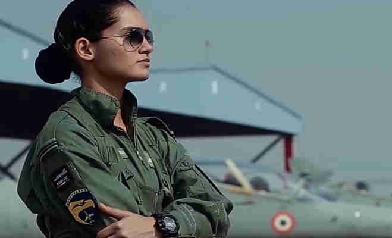

FIRST WOMEN FIGHTER PILOT

Flight Lieutenant Avani Chaturvedi (born 27 November 1993) is an Indian pilot from Rewa district, Madhya Pradesh.
She was declared as the first woman combat pilot along with two of her cohorts, Mohana Singh Jitarwal, and Bhawana Kanth.[1][2]
The trio was inducted into the Indian Air Force fighter squadron
in June 2016. They were formally commissioned by then Defence Minister Manohar Parrikar on 18th June 2016, to serve the nation.[3]
Avani was born on 27 October in 1993. Her father, Dinkar Chaturvedi, is an superintending engineer in Water Resource Department
of Madhya Pradesh government and her mother is a home maker. She completed her schooling from Deolond, a small town in Shahdol district
of Madhya Pradesh.[4] Completing her Bachelors in Technology from Banasthali University, Rajasthan in 2014 where she joined that
college's flying club which fascinated her to fly. She passed the AFCAT and further was recommended by AFSB.
Chaturvedi likes to play chess, table tennis and to do sketching and painting.Avani's elder brother, who is an officer
in the Indian Army, inspired her to join the Indian Air Force. She also had a few hours of flying experience in the flying
club of her college Banasthali University, which further inspired her to join the IAF(Indian Air Force).[5]
Avani Chaturvedi was selected to train at Hyderabad Air Force Academy and complete the training at the age of 25.
After completing one year of training there, Chaturvedi became a fighter pilot in June 2016. Once Chaturvedi completes
Stage III training at Bidar in adjoining Karnataka next year, they will be able to fly fighter jets like the Sukhoi
Su-30MKI and Tejas.In 2018, Chaturvedi became the first Indian woman pilot to take a solo flight in a MiG-21.
In 2018 Avani was promoted to the rank of Flight Lieutenant.Chaturvedi is posted in Indian Air Force No. 23 Squadron
Panthers in Suratgarh, Rajasthan.In 2018, she was honored with the doctorate degree from Banasthali Vidyapeeth.
On 9 March 2020, Chaturvedi was awarded with Nari Shakti Puraskar by President Ram Nath Kovind[10]
click here to get more details